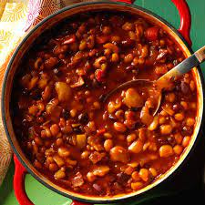

Beans

Description
Chili beans are beans cooked with a ground meat chili sauce. Chili beans are usually made with pinto beans, though you can also use kidney beans or black beans.
The chili sauce uses ground beef or turkey. We make our chili beans with pinto beans and serve them over rice, but you could serve them with cornbread, in a burrito, or over quinoa.
As is, this recipe makes a fairly mild batch of chili beans. If you'd like more heat, just add more chili powder to taste, or a little cayenne pepper.
You can also add Tabasco or Crystal hot sauce, either to the pot or to each individual bowl.
Ingredients
- 2 cups (1 pound) dry pinto beans OR 4 15-ounce cans pinto beans, drained
- 1 pound ground beef or ground turkey
- 2 cups uncooked white rice
- 1 yellow onion, chopped (about 1 1/2 cups)
- 2 tablespoons extra virgin olive oil
- 2 cloves garlic, chopped (about 1 teaspoon)
Steps
- If using dry beans, cook the beans on a stove top or in a pressure cooker. Stove Top Method - Put beans into a pot and cover with at least 3 inches of water—about 3 quarts for 2 1/2 cups of dry beans. Bring to a boil and then lower heat to simmer, covered, for about 2 1/2 hours.
- Cook the rice. When you're ready to begin making the chili beans (after the dried beans are cooked), cook the rice. Put 2 cups of rice in a medium thick-bottomed pot. Add 3 cups of water (less or more depending on package instructions), a tablespoon of butter (for flavor), and a teaspoon of salt. Bring to a boil, lower the heat to a low simmer, cover the pot and let cook for 15 minutes (again check your package instructions).
- Sauté the onions. In a large skillet, sauté onions in 2 Tbsp of olive oil until translucent on medium high heat, about 4 minutes. Add the garlic and chili powder and cook for a minute more. Remove the onions to a bowl.
- Brown the meat. Increase the heat to high, and add the meat to the same pan used to cook the onions. Let cook for a minute or two without moving so that the meat gets browned, then turn to brown on the other sides.
- Combine meat and onions, add tomatoes and jalapeño. Add the onions and garlic back to the pan. Taste for spiciness and add more chili powder if desired. Add one can of tomatoes, the sliced jalapeno pepper, the chopped parsley, 1 teaspoon of salt, and 1 teaspoon of sugar to counteract the acidity of the tomatoes. Stir to combine.
- Add the cooked beans and simmer. Once the beans are cooked, drain them. Add the beans to the meat and onions, adding another teaspoon of salt as the beans go in. Simmer for 5 to 10 minutes, tasting and adding more salt if needed to taste.